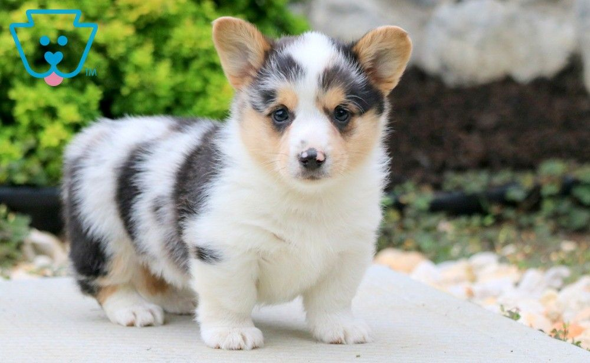

Welsh corgis are dogs that have short legs and long, stocky bodies. They belong to the herding group of
dogs. Their short legs allow them to run under cows as they round up the animals. There are two
different breeds, or types, of Welsh corgi—the Pembroke and the Cardigan.

The Pembroke Welsh Corgi is a cattle herding dog breed...
The Pembroke Welsh Corgi is a cattle herding dog breed that originated in Pembrokeshire, Wales. It
is one of two breeds known as a Welsh Corgi. Pembroke Welsh Corgis descended from the Spitz family
of dogs.